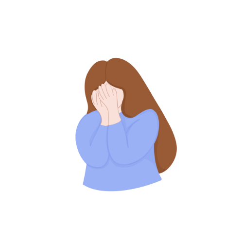
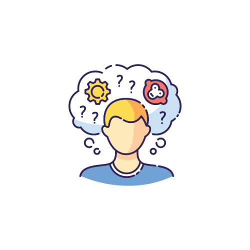
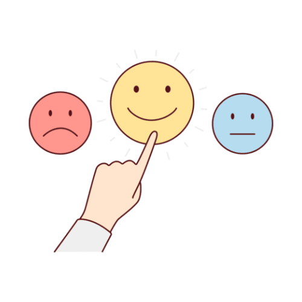

Hay emociones que no siempre sabemos explicar. Y aun así merecen espacio.
Algunas se sienten enormes. Otras aparecen sin aviso. Y muchas veces aprendimos a esconderlas antes que entenderlas.
A veces aparece cuando sentimos que no encajamos o creemos que nuestras emociones son “demasiado”.


Crecer también significa descubrir cosas nuevas sobre nosotros mismos. Y eso puede sentirse extraño al principio.

Sentir también es parte de conocernos.